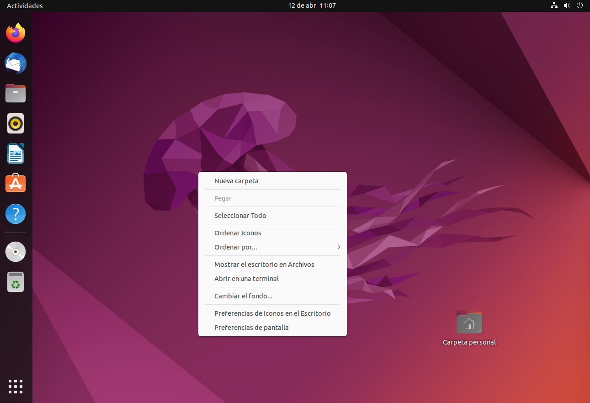
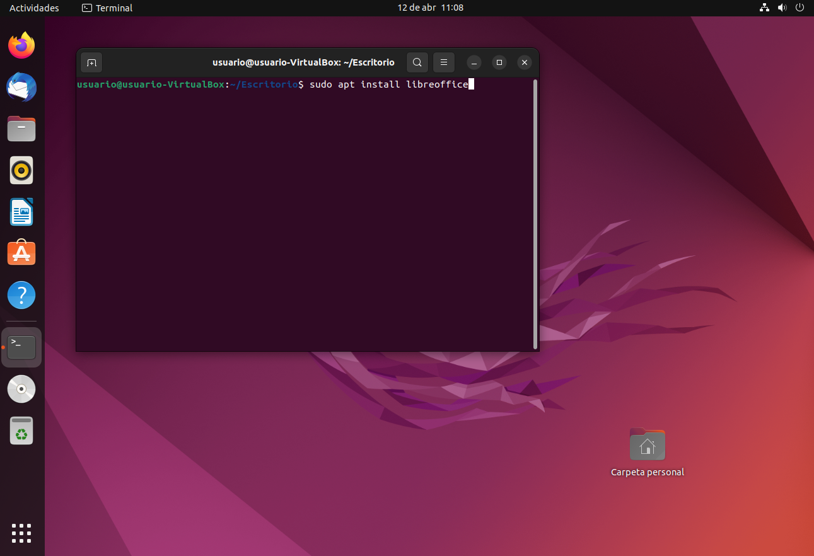
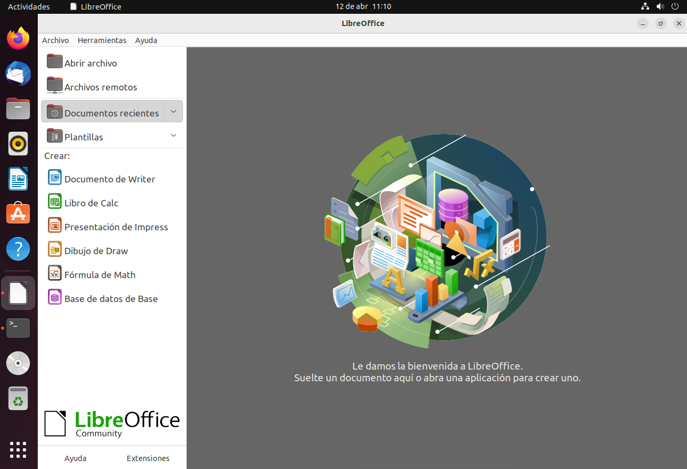

En ubutnu hay menos programas de ofimática disponibles, así que solo instalaré LibreOffice. Podría instalar OpenOffie, pero es esencialmente la misma suite, y el proceso es el mismo.
Una de las ventajas de Ubuntu (y las distribuciones Linux en general) sobre Windows, es que prácticamente todo se instala desde la terminal. Además Ubuntu, que está muy enfocada a usuarios novicios, lo tiene aún más fácil que otras distros.
Para realizar la instalación, primero abrimos la terminal. Podemos hacerlo con ctrl+alt+t o bien con click derecho y abrir terminal aquí. Hay otras formas, pero estas son las más fáciles y rápidas.
Una vez con la terminal abierta, escribimos: sudo apt update si no lo hemos hecho antes. Nos pedirá la contraseña, la introducimos y pulsamos S o Y en función del idioma de nuestro sistema. Cuando el proceso acabe escribimos sudo apt install libreoffice.
Listo, ya tenemos instalado LibreOffice. Podemos abrirlo escribiendo en la terminal: LibreOffice . O bien lo buscamos en la lista de programas instalados en el menú que aparece en la esquina inferior izquierda.
